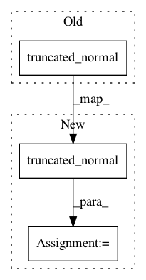

8e23a3ec47a2ccbf6cdd222a80886c6b9f17264f,keras/initializers.py,VarianceScaling,__call__,#VarianceScaling#Any#Any#,201
Before Change
if self.distribution == "normal":
// 0.879... = scipy.stats.truncnorm.std(a=-2, b=2, loc=0., scale=1.)
stddev = np.sqrt(scale) / .87962566103423978
return K.truncated_normal(shape, 0., stddev,
dtype=dtype, seed=self.seed)
else:
limit = np.sqrt(3. * scale)
return K.random_uniform(shape, -limit, limit,
dtype=dtype, seed=self.seed)
After Change
if self.distribution == "normal":
// 0.879... = scipy.stats.truncnorm.std(a=-2, b=2, loc=0., scale=1.)
stddev = np.sqrt(scale) / .87962566103423978
x = K.truncated_normal(shape, 0., stddev,
dtype=dtype, seed=self.seed)
else:
limit = np.sqrt(3. * scale)
x = K.random_uniform(shape, -limit, limit,
dtype=dtype, seed=self.seed)
In pattern: SUPERPATTERN
Frequency: 3
Non-data size: 3
Instances
Project Name: keras-team/keras
Commit Name: 8e23a3ec47a2ccbf6cdd222a80886c6b9f17264f
Time: 2019-03-21
Author: francois.chollet@gmail.com
File Name: keras/initializers.py
Class Name: VarianceScaling
Method Name: __call__
Project Name: keras-team/keras
Commit Name: 8e23a3ec47a2ccbf6cdd222a80886c6b9f17264f
Time: 2019-03-21
Author: francois.chollet@gmail.com
File Name: keras/initializers.py
Class Name: TruncatedNormal
Method Name: __call__
Project Name: tensorflow/tensorboard
Commit Name: 9660f6bfc406d5f53a995ed17a83d54d291ecf9c
Time: 2018-03-14
Author: 4221553+chihuahua@users.noreply.github.com
File Name: tensorboard/plugins/beholder/demos/demo/demo.py
Class Name:
Method Name: train